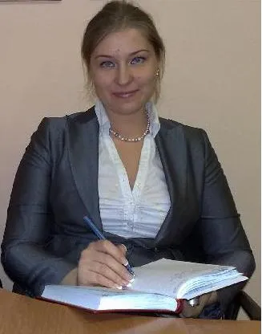

Новая профессия
Освойте основы ведения индивидуальных и командных коуч-сессий.
Уточнить условия →8 модулей, 160+ академических часов обучения и 60 часов межмодульной практики в трёх ролях. Онлайн в Zoom на русском языке.
Практика в трёх ролях — чтобы понять процесс с разных сторон
Коучинговые инструменты пригодятся в разных профессиях. Начать обучение можно без предыдущей подготовки коуча.
Освойте основы ведения индивидуальных и командных коуч-сессий.
Уточнить условия →Развивайте слушание, постановку вопросов и навыки работы с командой.
Обсудить задачу →Дополните практику инструментами для постановки целей и развития.
Узнать подробнее →Преподаватели, практическая программа, оригинальные документы и отзывы выпускников. Ниже можно самостоятельно изучить источники.
Во время обучения и между модулями участники закрепляют инструменты в сессиях.
Описание программы, образцы документов, отзывы и рецензии доступны для просмотра.
Архив церемонии «Выбор года» и материалы коучинг-центра.
Видео награждения →
Краткое содержание для знакомства. Полный учебный документ можно открыть ниже. Формулировки модулей и темы дополнительно сверяем с оригиналом перед публикацией.
Основы коучинга, этика, контракт, вопросы, структура сессии и модель GROW.
Разбор учебных сессий, обратная связь и развитие навыков индивидуальной работы.
Групповая динамика, фасилитация, работа с командами и проведение коуч-тренинга.
Анализ командных кейсов, системный подход, оценка групповой динамики.
Коучинговые инструменты для руководителей, организаций и деловой среды.
Практика бизнес-кейсов и профессиональная обратная связь.
Интеграция навыков, работа с запросами и сложными ситуациями.
Закрепление компетенций, итоговые задания и требования программы.
Важная часть программы — обучение через личный опыт и взаимную обратную связь.
Исследуете запрос и наблюдаете коучинговый процесс изнутри.
Тренируете вопросы, слушание и структуру сессии.
Учитесь наблюдать процесс и давать конструктивную обратную связь.
Условия зачёта практики и требования к сертификации определяются утверждённой учебной программой.
Оригинальные фотографии из репозитория Coach Union. Состав преподавателей потока 2027 года уточняется перед публикацией.

Материалы коучинг-центра ICU

Материалы коучинг-центра ICU

Материалы коучинг-центра ICU

Материалы коучинг-центра ICU
Посмотрите примеры оригинальных документов. ICU и ICF — разные организации; статус и условия выдачи документов следует проверять отдельно.


Исторические материалы TESU не подтверждают действующие университетские кредиты для набора 2027 года.
Оригинальные видеоотзывы с действующего сайта и архив письменных документов.

Смотреть оригинальный отзыв

Смотреть оригинальный отзыв

Смотреть оригинальный отзыв

Смотреть оригинальный отзыв
Первый модуль запланирован на 13–14 марта 2027. Полный календарь последующих модулей уточняется у координатора.
Занятия проходят по выходным онлайн в Zoom, язык обучения — русский.
Вы можете оплачивать обучение по модулям или воспользоваться скидкой при полной предоплате.
1 440 € · скидка 15% (экономия 216 €)
Или 8 платежей по 180 € за модуль.
Узнать условия записиДа, программу можно начать с основ коучинга.
В Zoom, на русском языке, с практикой между модулями.
Первый модуль — 13–14 марта 2027 года. Остальные даты уточняются.
Условия выдачи документа ICU определяются требованиями программы; образцы приведены выше.
По 180 € за модуль либо полная предоплата со скидкой 15%, если условия действуют на момент записи.
Мы расскажем о программе, стоимости и требованиях. Сообщение будет подготовлено в WhatsApp — отправить его сможете только вы.
+371 260 37277
coachunion.riga@gmail.com